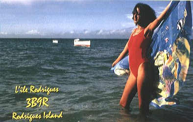
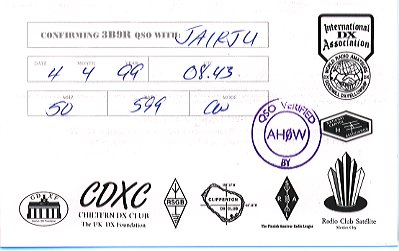

Ogasawara Is.
このリポートは 1エリアの入感状況です
全国版50MHz DX Clusterも参考にして下さい
TIME:UTC(JST-9:00)
 第29回VSG・第17回VCG全国大会
第29回VSG・第17回VCG全国大会
第29回VSG・第17回VCG全国大会
第29回VSG・第17回VCG全国大会
【Back Issues Sep.99】
30.Sep.99
(13:00-e) *ZL-TV 01:40- 45.240 -- *VK-TV 02:30- 46.172/240 -- A35SO 04:30 50.110/120 CW/SSB *9M-TV 05:00- 48.240/260 -- *BY-TV 05:00- 49.750 -- 9M6BG 06:57 50.100 CW VK6RSX 07:00- 50.304 CW Beacon HL1LTC 07:05 50.110 CW ◎ 午前中からVK/ZLのTVが上がったり下がったりしているが、50MHz帯でのこの方面から信号は07:00z前 には確認出来なかった。TongaのA35SOは入感してきても1エリアでは微弱。
|
年内(1999年)に6mを運用するDX-Pedi [Feedback] (時期的にJAから伝搬があると思われるもの)
*** 9M6BG(East Malaysia) 15.Sep-04.Oct HF & 6m OP.VR2BG [QSL Home QTH]
** T31T(C.Kiribati) 23.Sep-03.Oct HF & 6m OP.SM7PKK.SM6CAS.SM0AGD.SM6WYN
G4EDG.LA7MFA
** A35(Fafa Is.Tonga) 27.Sep-27.Oct HF & 6m OP.A35SO=DJ4SO.A35ZL=DJ7RJ
[QSL Home QTH]
** ZK1(South Cook Is.) 05.Oct-10.Oct 80m-6m OP.ZK1NJC=JI1NJC.ZK1LGO=JJ1LGO
ZK1LPN=JM1LPN [QSL via JI1NJC]
QRV & Beacon=50.105. QSX=50.135
** ZK3DX(Tokelau Is.) 07.Oct-12.Oct HF & 6m OP.SM7PKK.SM6CAS.SM0AGD.SM6WYN
G4EDG.LA7MFA
** ZK2(Niue) 07.Oct-14.Oct HF & 6m OP.A35ZL=DJ7RJ [QSL Home QTH]
** FO(Austral Is.) 15.Oct-24.Oct HF & 6m OP.JK7TKE [QSL Home QTH]
|
29.Sep.99
(13:00-d) VK-TV 02:20- 46.172 -- 9M-TV 04:00- 48.240/260 -- A35SO 08:15 50.110 CW QSO →JA2 YJ8UU 08:46 50.110 SSB (5B4FL 11:25 50.110 CW QSO →JR6's Okinawa) ◎ 02:00z頃に24.945MHzにQRVしていたT31Kによると、T31TがJAにアンテナを向けて50.110MHzでビーコ ンを出していると言っていたが、今のコンデションでのQSOはかなり"厳しく"なってきた。 夕方にA35、YJ8が入感していたので南太平洋方面のコンデションが"死んで"いる訳ではないが、磁気赤道 直下の"T3グループ"のパスは、JAに対して難しい。 11:20z頃から5B4FLとJR6(沖縄)がQSO。 5B4FL・Nickはアンテナ方向135度でJAを聞いている。28.Sep.99
(13:00-d) VK-TV 02:00- 46.172 -- ZL-TV 02:30- 45.240/260 -- V73SIX 05:00- 50.014 CW Beacon 9M-TV 05:00- 48.240/260 -- YC1MH 07:13 50.110/115 SSB ◎ A35SO/A35ZLの両局がTongaから予定通りQRVを始めた。HF帯でQSOした後に、6mがオープンしてもいな いのに50.110MHzで"名指し"でコールする局がいて紛らわしい。 夕方から西方向のコンデションが上昇、 YC1MHが強力だった。夜間のバンドは完全に"死んで"いる?。27.Sep.99
(13:00-d) VK-TV 01:00- 46.172 -- 9M-TV 04:30- 48.240/260 -- BY-TV 04:30- 49.750 -- VK6RSX 05:45 50.304 CW Beacon ◎ 昨日は28.005MHzのCWでQRVしていたT31T(C.Kiribati=Kanton Is)の信号が上昇した直後の03:00z頃か ら、50.110MHzでもBeaconが聞こえてきているので、28MHz帯の信号強度はオープンの良い"目安"となる。 午後から南西方向からの48MHz帯の9M-TVと共に、49.750MHzのTVが強力に入感して、西にアンテナを向け ると50MHz帯までBuzzで賑やか。 西マレーシアのペナン(Penang)島から24時間のQRVを開始したという9M2TOのBeacon(50.005MHz)は、今日 は聞こえて来なかった。26.Sep.99
(13:00-e) VK-TV 02:45- 46.172 -- T31T 03:20 50.110 CW/SSB weak V73AT 03:33 50.110 CW V73SIX 04:30- 50.014 CW Beacon 9M-TV 06:00- 48.240/260 -- ◎ 注目のT31Tは03:00頃からBeaconが入感、2エリアが呼び始めた。信号は弱くアップ・ダウンするコン ディションの中JA1、2、4エリアでQSOしているのが確認出来た。 CW/SSBの両方で入感していたが、信号 はまだ"弱すぎる"。 ◎ 9M2NK・中村さんからのリポートによると、9月25日にバングラデシュ(Bangladesh)のS21YJとQSOした との事。15:21zに50.107MHzでCQを出していたところを呼ばれたもの。 S21YJ・StigはHF帯ではアクティ ブな局だが、6mでのリポートは今回が初めて。 QTHはDhaka、QSLはSM5VZS。 Bangladeshは1992年のS21ZE以来QRVが無かったので、JAからのQSOが期待される。25.Sep.99
(11:00-g) VK-TV 21:50- 46.172/240 -- ZL-TV 00:30- 45.24/25/26-- VK4JSR 02:32 50.110/150 SSB VK4KK 02:45 50.110 SSB VK4BRG 02:50- 50.077 CW Beacon VK4GPS 02:53 50.110/105 CW VK4BLK 02:54 50.110/130 SSB VK4JH 03:19 50.110 CW (PY5CC 03:35 50.110 CW JR6 Okinawa) (PY5HOT 03:51 50.110 CW JR6 Okinawa) VK4ALV 03:40 50.110 SSB (CE3BFZ 04:11 50.110 CW JR6 Okinawa) V73SIX 06:25- 50.014 CW Beacon V73AT 06:55 50.110/100 CW (T31T 09:32 50.110 CW Beacon into Okinawa) VK8VF 10:00- 50.057 CW Beacon VK4RIK 10:00- 52.445 CW Beacon P29PL 10:27 50.110 SSB VK8MS 10:41 50.110 SSB ◎ 今週末に予定されていた9M2NK/JE1JKL・中村さんによる9M6NA(East Malaysia)の運用は、仕事の都合 で中止となった。 今のところ期日は未定だが、10月中に最低2回は9M6NAからの運用を予定している。 尚、先日の9M2JKL/Pの運用では、トラブルにみまわれJAとのQSOは3局だった。この"場所"はTVのバズもな くFBだったと。 ◎ 一昨日はVK4-Wのオープン時にJAでもW本土がスキャッターで入感するなど、秋のコンデションの上昇 を感じさせる伝搬だったが、今日の午後さっそく今季初のJAと南米(PY、CE)のQSOがリポートされた。 初オープンは03:30z頃からブラジルのPY5CC、PY5HOTやCE3BFZと沖縄がQSOしたもの。ここのところ頻繁 に南米→ハワイのオープンがリポートされ、アジア方面のTVの入感も南米からリポートされる様になって、 最も南米(PY)に条件の良い沖縄とのQSOは時間の問題だった。 ◎ ヨルダンからQRVしているJY9NX・田原さんからのリポートによると、9月23日の16:50z頃に南南東にア ンテナを向けてZ2/ZS6BTEを呼んでいたところ、PY5HOT、PY5CCに呼ばれ、初めての南米とのQSOに成功し たとの事。PY5CCはロングパス方向の東にアンテナを回してもRS52で聞こえていたので、この時のパスが どちらからのものだったのか定かではなかったが、30分ほどしてショートパス方向でCQを出したところ CX1CCC、LU6DRV、CX3ANなどに呼ばれたのでショートパスだったとも思われる。今回の南米とのQSOが加 わりエンティティーは29となった。24.Sep.99
(11:00-e) VK-TV 21:50- 46.172/240 -- ZL-TV 23:30- 45.240/260 -- VK4DUG 02:16 50.110 SSB VK4KK 02:19 50.110 SSB/CW VK4JH 02:23 50.110/150 CW/SSB VK4ABW 02:33 50.110/150 CW/SSB VK4ABP 02:44 52.345 CW Beacon VK8RAS 02:45 50.047 CW Beacon 9M-TV 02:45- 48.240 -- VK4BLK 02:50 50.125 SSB VK4APE 03:07 50.110/120 SSB VK4FNQ 03:09 50.110 SSB VK8ZAA 03:23 50.110/125 SSB V73AT 06:20 50.110 CW V73SIX 06:21 50.014 CW Beacon VK8VF 10:00 50.057 CW Beacon VK4RIK 10:05 52.445 CW Beacon *VK4BLK 10:09 50.110 CW/SSB VK8MS 10:14 50.110 SSB ◎ 今日も早い時間帯から46MHz帯のVK-TVが上昇してきたが、昨日とは打って変わってこの時間には6m帯 で入感する信号は無かった。 02:00過ぎからのVK4'sは強力。 西日本に被害を与えた台風18号は、夜には関東地方に最接近が予想されるため、夕方からアンテナもクラ ンク・ダウン。 ◎ ハワイのKH7Rは08:30zにT31T(Central Kiribati)と50.110MHzのCWでQSOしている。23.Sep.99
(09:00-c) VK-TV 00:00- 46.172 -- ZL-TV 04:30- 45.24/25/260 - ◎ この一週間のコンデションには大幅な変わりは無かった様だが、気候だけはすっかり秋の気配。 太平洋方面のコンデションが上昇しているので今日から始まる予定?のT31T(Central Kiribati)の運用に は期待が持てそう。まだHF帯でも運用開始のリポートは無いが、一行の乗ったヨットは天候にも恵まれ、 順調に航海を続け、9月18日(17:30z)には南緯11度56分、西経170度44分を航海していた。 予定では9月19日にFakaofo IsでZK3PMを乗せ、目的地のTokelaus & Cantonに向かう事になっている。 6mの運用周波数は50.110MHz。 ◎ 午前中(00:30z頃)にVK4'sと北米中部(W5.7.9.0 etc)、中米(HP)がオープン。この時間帯にはJAから もVKとQSOしている北米の局が弱いスキャッターで入感した。


16.Sep-22.Sep.99
[お知らせ]
◎ 9月16日から9月22日までこのコーナーの更新は休止します15.Sep.99
(13:00-f) VK-TV 02:30- 46.172 -- VK8RAS 03:00- 50.047 CW Beacon VK4BLK 03:13 50.110 CW/SSB VK4RIK 03:35- 52.445 CW Beacon V73SIX 03:39- 50.014 CW Beacon 9M-TV 04:00- 48.240/260 -- VK-TV 09:20- 46.172/240 -- 3D2KI 09:25 50.110 CW ◎ 熱帯低気圧が日本近海で発達、台風16号となった影響で、関東地方も朝から強風が吹き荒れた。 昼前後にVK4、8とV73が一時的に上昇してきたが、04:00z頃にはフェードアウト。 09:25z頃から50.110MHzのCWでCQを出していた3D2KIは、QSOする事もなく5、6分後には聞こえなくなった。14.Sep.99
(13:00-e) VK-TV 00:30- 46.172/240 -- T88XX 08:10 50.120 SSB QSL via JA1OYP 9M-TV 08:30- 46.240/260 -- 3D2TC 08:40 50.110 SSB 3D2KI 09:09 50.120/115 SSB JA0SUQ/JD1 09:10 50.130/140 CW Minami Torishima *3D2TC 09:10 50.130 SSB *3D2KI 09:17 50.100 CW YC1MH 09:49 50.110 SSB ◎ 午前中に46MHz帯のVK-TVが上昇していたが、VKの入感は無くTVも昼前にはダウン。 07:00z頃に28MHz帯で強力に入感していたT88XXが6mで聞こえて来たのは一時間後の08:00z過ぎから。3日間 オープンした中で今日が一番安定して入感。 09:00z頃からT88XXと同じ50.120MHzにQRVして来た3D2KI(OP.JH7MSB)は、50.115(SSB)/50.100(CW)にQSY。13.Sep.99
(13:00-d) VK-TV 00:30- 46.172 -- weak 9M-TV 06:00- 48.240/260 -- DU-TV? 06:00- 48.250 -- T88XW 07:16 50.115 SSB ◎ 05:00z頃から南西方向からのTVが上昇。 コンデションが上昇しても平日はQRVする局も少ないために 今日は9M2/4S7も聞こえて来ない。昨日JA2以西で入感したスリランカの4S7SYG・佐竹さんは、30局のJA とQSO出来たとのこと。 07:15頃から1時間ほど50.115MHzでT88XWが強力に入感。 ◎ 最近スリランカから4S7EA、4S7YSGの他に4S7AVR、4S7TN、4S7BRGなど、多くの局がリポートされる様 になった。 4S7YSG・佐竹さんの6mでのQRVが刺激となっている。4S7EA、4S7AVRは前のサイクルでもアク ティブだった局だが、4S7TN・Nandeは4S7YSGから"贈られた"IC-551でこの夏からQRVを始めた局。 最近新たにQRVを始めた4S7BRG・Marioはコロンボから南に約70KmのところにあるAmbarangodaという町に 住んでいる局。 スイス人のMarioはスイスの警察を退職して優雅に無線をしながらスリランカで暮らして いる。 彼はHF帯でもアクティブな局でQSLはHB9BRM宛。 彼の6mのRigはIC-706に約10mHの2ELデルタルー プで、椰子の木の間に張った北向き固定のアンテナ。(TNX 4S7YSG & JF2HEV)


12.Sep.99
(13:00-g) 9M-TV 05:00- 48.240/260 -- (9M2TO 05:20 50.117 CW JA4-) (9M2NK 05:26 50.107 CW JA4-) (4S7YSG 05:30- 50.110/120 CW JA2-6) (4S7TN 06:19 50.110 SSB JA5-6) T88XW 06:52 50.120 SSB QSL via JA6QXW (9M2KE 07:12 50.113 CW JA2-6) *T88XW 08:20 50.120 CW V73SIX 08:40- 50.014 CW Beacon V73AT 09:41 50.110 CW 3D2KI 09:50 50.120 CW OP & QSL JH7MSB VK-TV 11:30- 46.172 -- VK8VF 12:00- 50.057 CW Beacon ◎ 今日も05:00z過ぎから9M-TVが上昇、西日本で9M2's、4S7などとQSOが始まったが、1エリアでは相手 の信号は確認出来ない。 06:52zに突然T88XWの"CQ"が強力に入感。 50.120MHzで15日まで運用する。 今日からQRVを始めた3D2KI(OP.JH7MSB)は、KH7、V73とのオープンの後、08:50z頃からJAにも入感して きた。 IC-706MK2と2eleのHB9CVで16日まで運用。周波数は50.120MHz。11.Sep.99
(13:00-e) VK-TV 00:30- 46.172/240 -- weak 9M-TV 05:00- 48.240/260 -- 9M2TO 05:25 50.117 SSB/CW V73SIX 06:06- 50.014 CW Beacon ◎ ここのところ一時的に午後から48MHz帯の9M-TVが上昇していたが、きょうはTVの上昇と共に久しぶり に9M2TOが入感してきた。30分程でフェードアウトしたが、1エリアでは05:25z頃のSSBが強力だった。 ◎ ヨルダン(Jordan)から6mにQRVしているJY9NX・田原さんは、運用を開始してから2週間ですでに欧州、 アフリカを中心に100局近いQSOに成功している。運用時間は昼休み(10:00-11:00z)と帰宅後の15:00zが 主だが、ヨルダンでは"金、土曜日が週末"なので、この両日にQSOのチャンスが増すとの事。 アフリカ南部は毎日オープンするのでアクティビティのあるところはほとんどQSO済みで、後は"ペディシ ョン待ち"となっている。 現在までにQSOしたエンティティーは下記の23。 早い時期にJAとQSO出来るの を楽しみにしていると。 欧州: LZ.DL.UA.UR.YO.SV.I.9H.PA.YU.SP.SM アジア: 4X.5B4.JY アフリカ: FR.ZS.Z2.7Q7.V5.3C.9J.5H10.Sep.99
(13:00-e) VK-TV 00:30-55 46.172 -- weak 9M-TV 06:00- 48.240/260 -- *JR6YAG 09:00- 50.037 CW Okinawa Beacon ◎ 相変わらずコンデションは落ち込んでいる。 9月9日のS.F値は、4月26日の104.6に次ぐ106.5まで下 降した。9月中旬以降に大規模なDX Pediが予定されているが、それまでには上昇してくれるのを期待し たい。 ◎ マカオからQRVしているXX9TUP・森田さんによると、6mは相変わらず50.130MHzで"オートキーヤー" でCQを出しているが、9月5日のオープンの後は沖縄と短時間開いただけで本土とのパスはないとの事。 沖縄とのオープンでは51.130MHzのFMでもQSO出来ている。森田さんは15階のマンションから、JA向けに 固定した6ELアンテナで13日(月)まで運用する。09.Sep.99
(13:00-e) 9M-TV 06:30- 48.240/260 -- ◎ 夕方に48MHz帯の9M-TVが上昇するまで、45-49MH帯のTVも聞こえない静かなコンデション。 夜もバン ドは完全に"死んで"いる。08.Sep.99
(14:00-d) 9M-TV 06:00- 48.240/260 -- VK8VF 09:50- 50.057 CW Beacon ◎ 日中はTVの入感もほとんど無い、静かな6mバンド。 9月6日にはSF(Solar flax)も118.5と4月28日以 来、久しぶりに120を下回った。 ◎ 昨年(1998)10月にTonga Isからアクティブに出ていたA35SO(DJ4SO=Klaus)とA35ZL(DJ7RJ=Willi) の両局は、今年も9月27日からTongaのFafa Is.からの運用を予定している。 A35ZLは途中、ZK2からの 運用も計画中(日程は表参照)。この期間には、T31/ZK3のPediも行われているので、南太平洋方面は賑 わいそう。(TNX JF2MBF)07.Sep.99
(14:00-e) VK-TV 03:00- 46.172 -- VK8RAS 03:45 50.047 CW Beacon VK4JH 03:47 50.110 CW V73AT 09:17 50.110 CW ◎ マカオからQRVしているXX9TUP(OP.JM3DTY)森田さんは、6mで既に70局のJAとQSOしているとのこと。 当初SSBでの運用も予定していたが、6mではSSBのライセンスは貰えず、CWとFMだけの運用となっている。 CWの周波数は50.130MHz。 QSLは帰国後ログを整理して、年内にQSL・ManagerのJL3VULから発行される 予定。06.Sep.99
(14:00-e) BY-TV 00:00- 49.750 -- *JR6YAG 00:45- 50.036 CW Okinawa Beacon VK-TV 02:30- 46.172 -- weak 9M-TV 08:30- 48.240/260 -- VR2LC 09:27 50.130 SSB/CW VK8VF 12:00 50.057 CW Beacon VK4ABW 12:25 50.110 SSB VK4JH 12:42 50.110 CW ◎ 日中は、昨日と違ってTVのバズも無い静かな6mバンド。 夕方から西方向のバズが上昇、VR2が入感し てきた。 今日はアンテナ方向も"ダイレクト"。05.Sep.99
(15:00-j) BY-TV 00:00- 49.750 -- ZL-TV 00:00- 45.240/260 -- weak VK-TV 02:50- 46.172 -- KH0/JN1WXW 02:51 50.125 SSB/CW/AM VK4BRG 03:55- 50.077 CW Beacon VK4JH 04:03 50.110/145 CW VK4KK 04:04 50.110 CW V63AO 06:03 50.120 SSB KH0/JH1AEF 06:16 50.125 SSB V73SIX 06:20 50.014 CW Beacon (4S7YSG 07:10 50.110 CW JR6/7J6) *KH0/JN1WXW 07:18 50.125 CW/SSB 9M-TV 07:50- 48.240/260 -- *VK4JH 08:00 50.110/120 CW VK4RIK 08:00- 52.445 CW Beacon (4S7EA 08:55 50.110 SSB JR6) JD1BIA/JD1 09:05 50.120 SSB QTH Hahajima FK1TK 09:13 50.110/140 SSB VR2XMT 09:16 50.110 SSB VK4ABW 09:18 50.110 SSB *JR6YAG 09:30- 50.036 CW Okinawa Beacon *KH0/JN1WXW 09:30- 50.126 SSB XX9TUP 09:39 50.130 CW ANT 180deg SC VK8VF 12:10- 50.057 CW Beacon YC1MH 12:32 50.110/130 SSB YC1GTS 12:36 50.130 SSB VK8RAS 14:55- 50.047 CW Beacon ◎ 太平洋方面の近場のパスが良好。 昼前から入感していたKH0'sは、1エリアでもアップ＆ダウンを繰 り返しながら夕方まで入感していた。 4S7とのQSOは今日も"沖縄止り"?。 KH0の約3KHz上で09:30z過ぎから入感してきたマカオのXX9TUPは、VR2と共に真南(180度)からのスキャッ ター。04.Sep.99
(13:00-g) BY-TV 00:00- 49.750 -- VK-TV 00:00- 46.172 -- *JR6YAG 00:40- 50.036 CW Okinawa Beacon HL2IGU 00:42 50.120 CW JD1BIA/JD1 01:10 50.110/120 SSB QTH Hahajima VK4ABW 01:29 50.110 SSB DS5ISO 02:43 50.130 SSB VK4KK 05:11 50.110 SSB (4S7YSG 07:07 50.110 CW JR6) JA0SUQ/JD1 07:48 50.115 SSB QTH Minamitorishima V73SIX 07:55- 50.014 CW Beacon FK1TK 08:05 50.120 SSB (KH0/JN1WXW 08:55 50.125 CW JA3) DU9JC 09:10 50.175 SSB VK4TZL 09:17 50.110/120 SSB ◎ 9月3日からQRVしているXX9、KH0のオープンが期待されたが、1エリアではまだ6mでのQSOは確認され ていない。 日中は近場のDXに混じってVK4が時々聞こえるだけだったが、夕方から昨日同様、太平洋方 面が上昇してきた。 南鳥島のJA0SUQ/JD1・斉藤さんの滞在は9月17日まで。03.Sep.99
(14:00-g) VK-TV 00:00- 46.172/240 -- 9M-TV 00:20- 48.240/260 -- VK4JH 00:29 50.110 CW VR2XMT 00:50 50.110 SSB *JR6YAG 00:53 50.036 CW Okinawa Beacon BY-TV 01:45- 49.750 -- HL5XF 02:38 50.110 SSB BV2DP 02:39 50.110 SSB VK8RAS 02:48 50.047 CW Beacon VR2ZLP 03:22 50.110 SSB HL1LTC 05:50 50.110 CW YJ8UU 08:55 50.110 SSB FK1TK 09:00- 50.120/110 SSB FB ! *VK4JH 09:20 50.110 SSB VK4GPS 09:25 50.110 CW VK8VF 12:53 50.057 CW Beacon *HL5XF 13:59 50.130 CW/SSB ◎ 今日は早朝からVK4が入感していた。 その後、西方向からのバズと共に近場のコンデションも上昇。 最近01:00-02:00z頃に、KH6/7→南米(LU)のパスがリポートされる様になった。徐々に6mにも"秋の気配" が感じられる。02.Sep.99
(11:00-e) VK-TV 00:30- 46.172 -- YJ8UU 08:12 50.110/130 SSB QSO with KH7DM 3D2TC 08:50 50.110 SSB weak VK8RAS 10:33- 50.047 CW Beacon VK4BRG 10:33- 50.077 CW Beacon ◎ 日中はVK-TV(46.172MHz)が時々上昇する程度で、西方向の49.750MHzも聞こえて来ない、静かな6m。 08:10z頃から突然YJ8UUが入感、KH7DM、KV6J(KH6)など、ハワイとQSOしている信号は強力だった。 スチュワートはIC-746に3ELのデルタループでQRVしている。今日は08:45zにQRT。 ◎ サモアの5W1SA・佐久間さんのQSLマネジャーをしているJH7OHF/1・小野さんからの連絡によると、 5W1SAのホームページに最近ログサーチ(Quick Log Search)が新設されたとのこと。 URLは、http://www.lesamoa.net/~atsuo/5w1sa/ 尚、マネジャーのJH7OHF/1宛のQSL請求は新住所（〒343-0836 越谷市蒲生寿町 15-10 小野 勝志）へ。01.Sep.99
(14:00-e) BY-TV 00:00- 49.750 -- VK-TV 01:00- 46.172/240 -- 9M-TV 08:30- 48.24/25/260- *VK-TV 08:40 46.172 -- VK4BRG 09:00- 50.077 CW Beacon ◎ 昼頃まで46MHz帯のVK-TVが上昇していたが50MHzではVKの入感は確認出来なかった。午後はTVの入 感も途切れがちでバンドは静か。 夕方に再び46.172MHzが上昇。
| Index | Back Issues |
|---|---|
|
最新情報へ戻る |